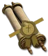

Heyday

Hratli's Ward
Templar's Contract
Required Level: 1
Runner Life: +1700-1900
Runner Defense: +3200-3600
Runner Damage: +200-240
+20 to Zeal
+20 to Fanaticism
+20 to Salvation
Build: Fanaticism Zealot (Salvation)
+12-15 to Sacrifice
+12-15 to Vigor
+60-70% Warden Strength
+25-30% Vanguard Strength
Unique Templar Contract
Hratli's Ward
- Type
- Templar Contract
- Base
- Templar's Contract
- Required level
- 1
- Item level
- 120